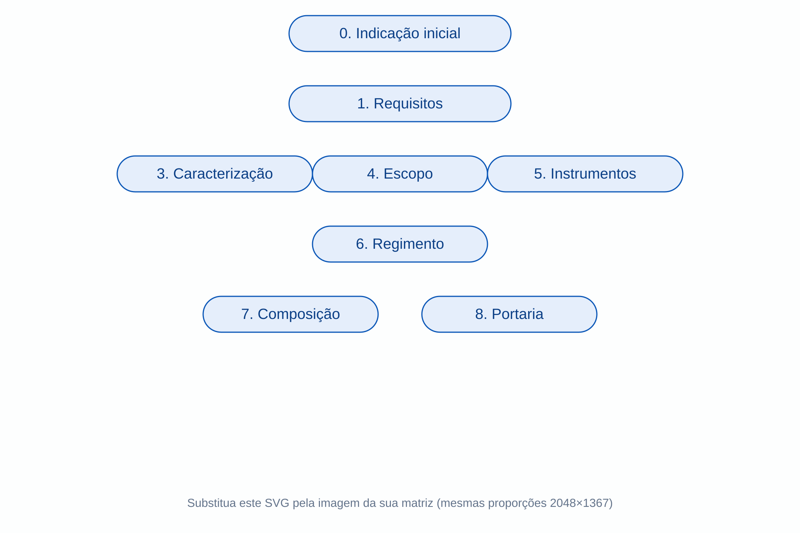

Login Matrizes
Lembrar minha senha
Login
Gerenciamento de Comissões
ABM
Acessar a matriz →
Matriz Gerencial – Associação beneficete de Maracaju
Pesquisar
Sair
Matriz
Clique em uma caixa para abrir a etapa.

Estrutura
Direção
Portaria
Grupos técnicos
Monitor
Gestor
Membros consultivos
Grupos
Painéis
Gestão geral
Painel gerencial
Visão geral
↗
Rotinas
Acompanhamento
↗
Indicadores
Resumo
↗
2026
↗
2025
↗